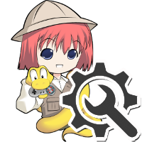
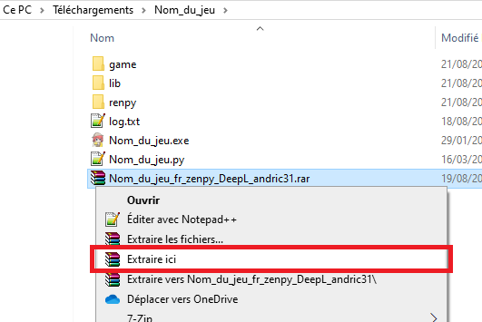

📦 1) Télécharge la traduction adaptée à ton jeu
La traduction est généralement fournie sous forme d’archive
(souvent .rar ou .zip) :
nom_du_jeu_fr_zenpy_DeepL_andric31.rar🗂 2) Extraire l’archive au bon endroit
Sous Windows :
- Clique droit sur l’archive
.rar - Choisis « Extraire ici »
- Extraire dans le dossier du jeu, où se trouve l’exécutable
.exe
📌 Important : il faut extraire
à la racine du jeu,
pas dans un sous-dossier au hasard.
Exemple d’emplacement attendu :

📁 3) Vérifier l’emplacement final
Une fois l’extraction terminée, le fichier doit se trouver ici :
.\Nom_du_jeu\game\tl\fr_zenpy_DeepL_andric31\x.rpyStructure typique :
Nom_du_jeu
├── Nom_du_jeu.exe
└── game
├── script.rpy
└── tl
└── fr_zenpy_DeepL_andric31
└── x.rpy
Si le dossier fr_zenpy_DeepL_andric31 apparaît bien dans
game\tl\, alors l’installation est correcte ✅
▶️ 4) Lancer le jeu
Lance simplement :
Nom_du_jeu.exeSi la traduction est bien installée :
- Le jeu se lance en français automatiquement ✅
- ou le français apparaît dans les options de langue ✅
⚠️ Erreurs à éviter
🛠️ Ce qu’il ne faut pas faire (et quoi faire à la place)
❌ Ne pas installer une traduction d’une autre version !
✅ Télécharge toujours la même version de traduction que la version du jeu pour éviter les problèmes de compatibilité.
✅ Télécharge toujours la même version de traduction que la version du jeu pour éviter les problèmes de compatibilité.
❌ Ne pas extraire les fichiers n’importe où !
✅ Toujours extraire dans le dossier du jeu et non ailleurs sur ton PC.
✅ Toujours extraire dans le dossier du jeu et non ailleurs sur ton PC.
❗ Problèmes fréquents
❌ La traduction ne s’affiche pas
Vérifie :
- Que tu n’as pas un dossier du type
Nom_du_jeu\Nom_du_jeu\game\...(double dossier) - Que le dossier
fr_zenpy_DeepL_andric31est bien dansgame\tl\ - Que tu as bien remplacé les anciens fichiers si une version précédente existait
❌ Erreur au lancement
Supprime l’ancienne version de la traduction puis réinstalle proprement.
💡 Astuce
Si tu avais déjà une ancienne version :
- Supprime entièrement :
game\tl\fr_zenpy_DeepL_andric31- Réinstalle la nouvelle archive proprement
Ça évite les conflits de fichiers ✅